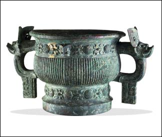

1050 B.C. Zhou conquest of the Shang dynastyThe Zhou lived to the west of the lands controlled by the Shang in present day Shaanxi. In the past the Zhou had been an ally of the Shang dynasty. However in 1050 B.C., the Zhou rose against the Shang and defeated them in battle. The early years of Zhou rule were considered to be a 'golden age' for China. The first three Kings of the Zhou dynasty brought stability to the region and in future years they were held up as examples of how to rule properly. 
Western Zhou period bronze ritual food vessel.
|